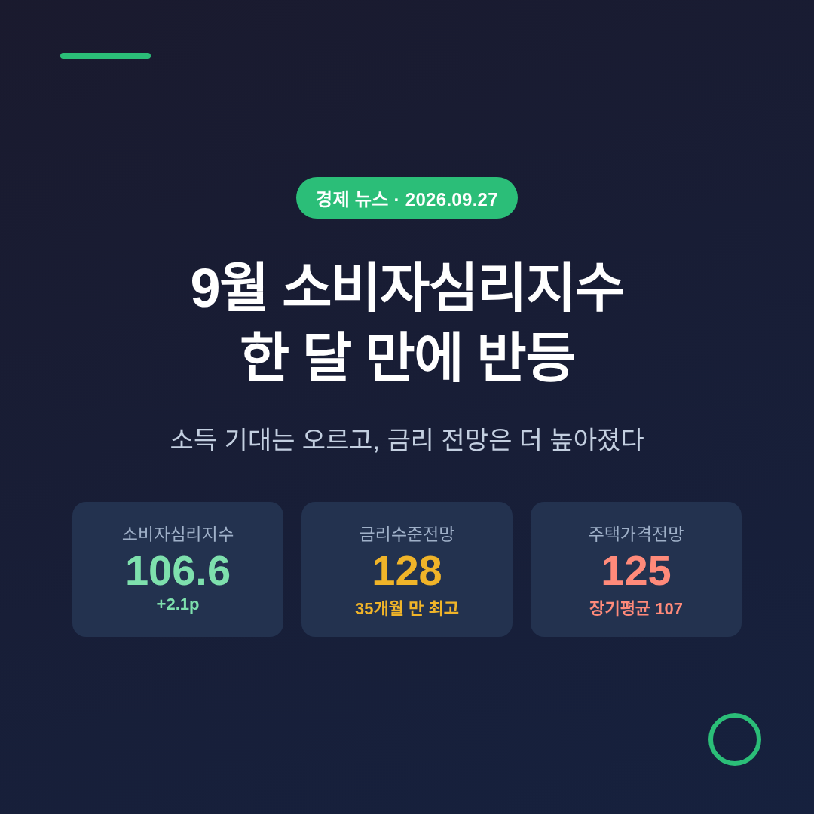
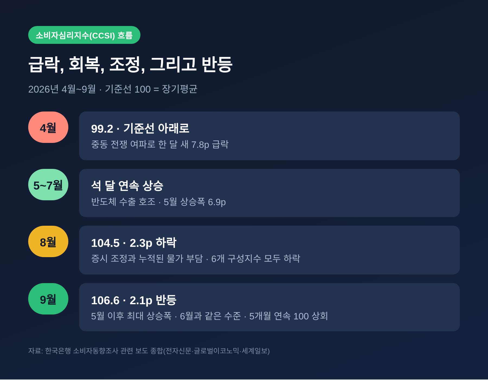
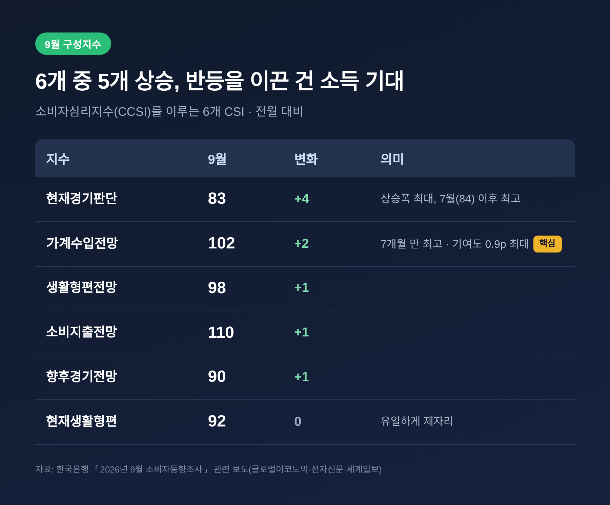
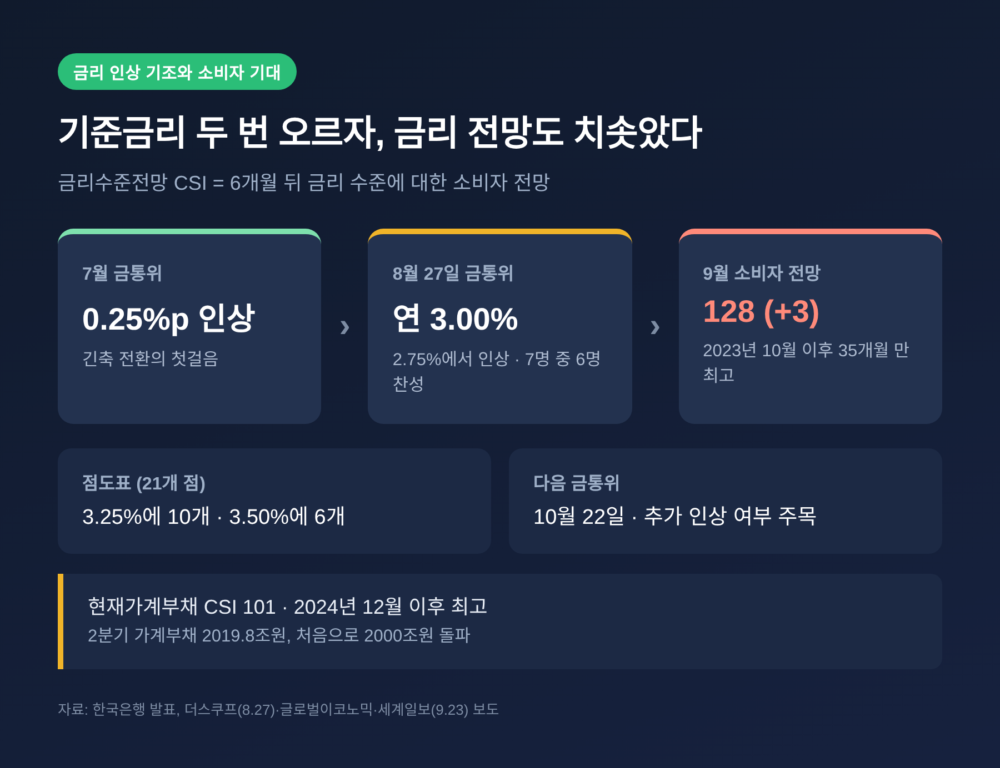
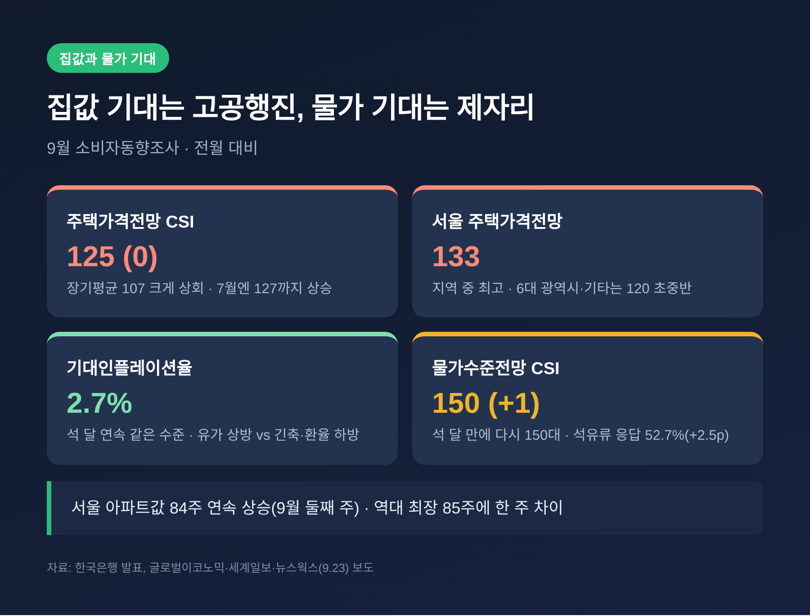
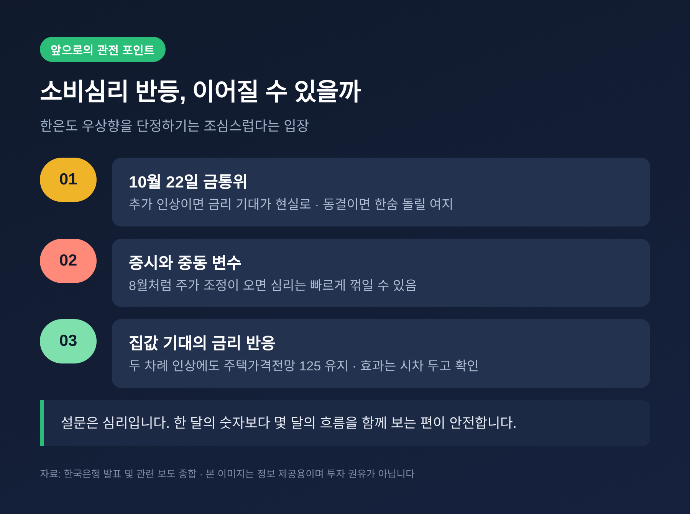

이번 글에서는 한국은행이 9월 23일 발표한 9월 소비자동향조사를 정리해 보겠습니다. 소비자심리지수는 한 달 만에 다시 올랐지만, 같은 조사 안에서 금리와 집값에 대한 기대도 함께 높아졌습니다. 반가운 숫자와 조심스러운 숫자가 한 장의 표에 나란히 놓인 셈입니다.
세 줄 요약
- 9월 소비자심리지수(CCSI)는 106.6으로 전월보다 2.1p 상승했습니다. 8월 하락을 딛고 한 달 만의 반등이며, 5개월 연속 기준선 100을 웃돌았습니다.
- 반등의 중심에는 가계수입전망(102)과 현재경기판단(83)이 있습니다. 반도체 수출 호조가 설비투자와 소비를 거쳐 소득 기대로 번졌다는 것이 한은 설명입니다.
- 반면 금리수준전망 CSI는 128로 2년 11개월 만의 최고, 주택가격전망은 125로 장기평균(107)을 크게 웃돌았습니다. 기대인플레이션율은 2.7%에 머물렀습니다.
무슨 일인가 — 한 달 만에 다시 오른 소비심리
소비자심리지수는 여섯 개의 세부 지수를 묶어 만든 지표입니다. 현재생활형편, 생활형편전망, 가계수입전망, 소비지출전망, 현재경기판단, 향후경기전망이 그것입니다. 100보다 높으면 장기평균보다 낙관적이라는 뜻입니다.
9월 수치는 106.6이었습니다. 8월(104.5)보다 2.1p 높고, 상승 폭은 5월(+6.9p) 이후 가장 컸습니다. 조사는 9월 9일부터 16일까지 진행됐습니다.
올해 흐름을 짚어 보면 굴곡이 뚜렷합니다.
- 4월: 중동 전쟁 여파로 7.8p 급락, 99.2
- 5~7월: 반도체 수출 호조에 힘입어 석 달 연속 상승
- 8월: 증시 조정과 누적된 물가 부담으로 2.3p 하락, 104.5
- 9월: 다시 2.1p 올라 106.6 (6월과 같은 수준)

8월과 9월의 차이는 세부 지수에서 잘 보입니다. 8월에는 여섯 개 지수가 모두 내렸습니다. 9월에는 다섯 개가 오르고, 현재생활형편(92)만 제자리였습니다.
반등을 이끈 것 — 소득 기대와 체감 경기
가장 크게 오른 것은 현재경기판단입니다. 79에서 83으로 4p 뛰었습니다. 지금 경기가 어떠냐는 질문에 대한 답이 한 달 새 눈에 띄게 달라졌습니다.
가계수입전망도 100에서 102로 올랐습니다. 2월(103) 이후 7개월 만의 최고치입니다. 세계일보 보도에 따르면 이번 CCSI 상승에 대한 기여도는 가계수입전망이 0.9p로 가장 컸습니다.
생활형편전망(98), 소비지출전망(110), 향후경기전망(90)은 각각 1p씩 올랐습니다. 1년 뒤 임금 수준을 묻는 임금수준전망 CSI도 124로 1p 상승해, 장기평균 116을 1년 9개월째 웃돌고 있습니다.

한은이 짚은 연결 고리는 이렇습니다. 반도체 수출이 잘되니 기업이 설비투자를 늘리고, 투자와 소비가 살아나면서 가계의 소득 기대가 높아졌다는 것입니다. 박용민 한은 경제심리조사팀장은 반도체 호조가 소득여건으로 번지는 효과가 이번에도 나타났다고 설명했습니다.
증시도 한몫했습니다. 8월에는 주가 하락으로 현재가계저축지수가 94까지 떨어졌습니다. 주식과 펀드가 가계저축 인식에 포함되기 때문입니다. 9월에는 흐름이 달랐습니다. 코스피가 9일 7051.64로 마감하며 33거래일 만에 7000선을 되찾았습니다.
물론 순탄하지만은 않았습니다. 14일 코스피는 3.26% 급락해 6684.37까지 밀렸습니다. 이후 18일과 21일 반등을 거쳐 23일 7080.92로 마감했습니다. 조사 기간이 이 요동과 겹친 만큼, 한은이 말한 '변동성 축소'는 조심스럽게 읽을 필요가 있습니다.
왜 중요한가 — 금리수준전망 128이 말하는 것
이번 조사에서 가장 눈여겨볼 숫자는 따로 있습니다. 6개월 뒤 금리 수준을 묻는 금리수준전망 CSI입니다.
9월 값은 128로 전월보다 3p 올랐습니다. 2023년 10월(128) 이후 2년 11개월, 즉 35개월 만의 최고치입니다. 금리가 더 오를 것이라고 보는 소비자가 그만큼 많다는 뜻입니다.
이 숫자는 한은의 행보와 맞물려 있습니다.
- 7월: 기준금리 0.25%p 인상
- 8월 27일: 2.75%에서 3.00%로 추가 인상, 금통위원 7명 중 6명 찬성
- 연속 인상은 2022년 4월~2023년 1월 이후 처음
- 점도표 21개 점 가운데 10개가 3.25%, 6개가 3.50%에 찍힘
금리수준전망 CSI는 6월에 한은의 인상 기조가 반영되며 12p 급등했습니다. 8월 1p 내렸다가 9월 다시 올랐습니다. 신현송 총재가 "호미로 막을 것을 가래로 막는다"는 속담을 들며 선제 대응을 강조한 것도 소비자들 귀에 들어갔을 것입니다.

가계부채에 대한 인식도 무거워졌습니다. 현재가계부채 CSI는 101로 1p 올라 2024년 12월 이후 가장 높았습니다. 2분기 가계부채는 2019조8000억원으로 처음 2000조원을 넘었고, 5대 은행 주담대 고정형 금리 상단은 연 7%대입니다.
예전에는 소비심리가 오르면 금리 부담은 뒤로 밀리곤 했습니다. 지금은 두 가지가 한 조사 안에서 함께 올라가고 있습니다.
배경과 쟁점 — 식지 않는 집값 기대, 멈춰 선 물가 기대
주택가격전망 CSI는 125로 8월과 같았습니다. 장기평균 107을 크게 웃도는 수준입니다. 지역별로는 서울이 133으로 가장 높았고, 6대 광역시와 기타 지역은 120 초중반이었습니다.
올해 궤적은 극적입니다. 1월 124에서 3월 96까지 떨어지며 13개월 만에 '하락 전망'이 우세해졌습니다. 정부의 강경한 부동산 정상화 메시지가 작용했습니다. 그러나 4월 104로 돌아선 뒤 7월에는 127까지 올랐습니다. 2021년 9월(128) 이후 최고였습니다.
한은은 상승 요인과 하락 요인이 맞섰다고 설명했습니다. 수도권 아파트값의 높은 오름세가 한쪽에, 부동산 대책과 기준금리 인상이 다른 쪽에 있습니다. 실제로 서울 아파트값은 9월 둘째 주까지 84주 연속 올랐습니다. 역대 최장 기록(85주)에 한 주 차이입니다.

물가 기대는 제자리였습니다. 향후 1년 기대인플레이션율은 2.7%로 석 달째 같았습니다. 방향이 엇갈린 결과입니다. 중동 충돌 재개에 따른 유가 상승은 위로, 통화긴축 지속 기대와 원/달러 환율 하락은 아래로 작용했습니다.
다만 세부를 보면 긴장이 남아 있습니다. 물가수준전망 CSI는 150으로 석 달 만에 다시 150대에 올랐습니다. 물가에 영향을 줄 품목으로 석유류를 꼽은 응답은 52.7%로 2.5p 늘었습니다. 8월 소비자물가 상승률도 3.1%였습니다.
좋은 점과 아쉬운 점을 함께 적어 두겠습니다. 소득 기대가 오르고 체감 경기가 나아진 것은 분명한 개선입니다. 그러나 그 개선의 뿌리가 반도체라는 한 업종에 많이 기대고 있습니다. 23일 코스피가 올랐을 때도 하락 종목(548개)이 상승 종목(311개)보다 많았습니다.
전망 — 10월 금통위와 세 가지 관전 포인트
앞으로의 관전 포인트는 크게 세 가지입니다.
첫째, 10월 22일 금통위입니다. 금리수준전망이 이미 높은 상태에서 추가 인상이 나오면, 소비자의 금리 기대는 현실이 됩니다. 반대로 동결되면 금리 전망은 한숨 돌릴 수 있습니다.
둘째, 증시와 중동 변수입니다. 박용민 팀장도 주식시장 상황이나 중동 전쟁 같은 돌발 변수가 있어 소비심리가 계속 우상향한다고 말하기는 조심스럽다고 했습니다. 8월 한 달 동안 심리가 꺾였던 경험이 이를 보여 줍니다.
셋째, 집값 기대가 금리에 반응하는지입니다. 두 차례 인상에도 주택가격전망은 125에서 내려오지 않았습니다. 금리 신호가 집값 기대에 닿는 데는 시간이 걸릴 수 있습니다. 아직 효과를 단정하기는 이릅니다.

아쉬운 점도 분명히 적어 둡니다. 소비자동향조사는 심리를 묻는 설문입니다. 실제 소비나 집값이 그대로 움직인다는 보장은 없습니다. 한 달의 숫자보다 몇 달의 흐름을 함께 보는 편이 안전합니다.
정리하면 이렇습니다.
9월 소비자심리지수는 소득 기대에 힘입어 반등했습니다. 그러나 같은 조사가 금리는 더 오르고 집값도 계속 오를 것이라는 기대를 함께 보여 줬습니다.
"지갑은 열릴 준비를 하는데, 금리의 그림자는 더 길어졌습니다."
지금 무엇을 먼저 살펴야 하느냐고 물으신다면, 소득 전망보다 내 대출의 금리 구조를 먼저 들여다보시길 권합니다.
본 글은 한국은행 발표와 언론 보도를 바탕으로 경제 흐름을 해설한 정보 제공 목적의 글이며, 투자 권유가 아닙니다. 주식·부동산 매매나 대출 결정의 판단과 책임은 본인에게 있습니다.
참고 자료: 한국은행 「2026년 9월 소비자동향조사」 관련 보도 — 글로벌이코노믹(9.23), 전자신문(9.23), 세계일보(9.23), 뉴스웍스(9.23), 전자신문(8.25), 더스쿠프(8.27), 파이낸셜뉴스(9.27), 서울신문(9.9)